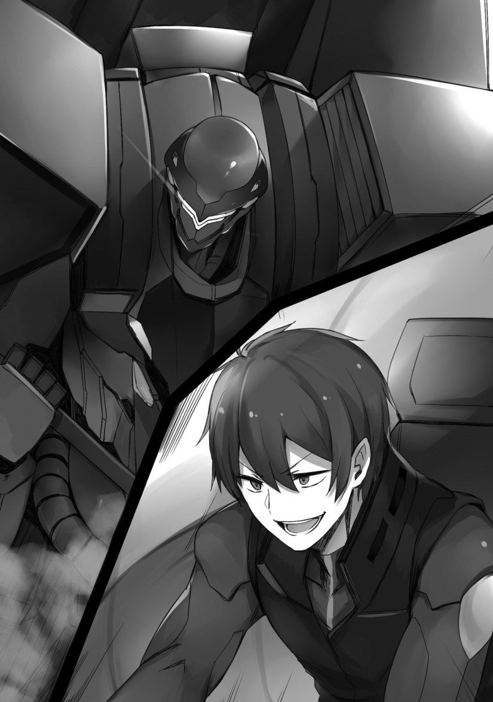

Love
Marie trembled while looking at the grey armor standing in the arena.
(What? What is that? I never heard about there being a strong person like this. I…I don’t know who this is!)
Once the grey armor took its foot off of Jilk, people in charge soon rushed to get him. It seemed that his life wasn’t in danger, and that he just fainted.
Kyle was surprised.
“Will things really be fine? The four of them lost while not being able to do anything at all.”
Julian clenched his fist.
He looked at his white armor.
“──I didn’t think he’d turn out to be such an opponent. However, my armor was made using the best technology in the kingdom. Marie, don’t worry.”
Marie made a stiff smile.
(Didn’t everyone else say that and still lost?! That really isn’t helpful. That reminds me, these guys were useless during the war part and suffered defeat, so I made my older brother clear the game.)
Marie thought about her previous life.
It was a form of escapism, not wanting to accept the current situation.
(My older brother was terrible! I told my mom that I went on a vacation, then he died──and afterwards, my position in the family was non-existent! They didn’t even help me when my partner ran away after we married! It’s all my brother’s fault! I see, that Leon guy is similar to my brother, and it’s making me irritated!)
Julian took off his coat.
Then, he put on a whole-body suit that were like tights. Regular clothing became a hinderance when getting into armor, and when thinking about it, the outfit used were garments similar to tights, which emphasized the outline of the body.
Marie had some thought after seeing it in real life.
(This is kind of stupid. Though in the game, I was a little excited by his muscles appearing. I’d prefer if he at least wore a vest or pants like that copycat of my older brother.)
Once Julian entered the armor, the eyes of its helmet glowed. It had two eyes, and pretty much looked like a robot.
Kyle looked at the white armor with a gaze of yearning.
“How nice~. I’d like to have that as well.”
Marie shook her head.
“You’re not a knight, you can’t. Besides, you wouldn’t be able to move it since you’re an elf.”
“You never know unless you try. There’s a chance it could work since I’m only a half elf.”
“No. Besides, having armor──”
Thereupon, Marie thought for a bit.
(H, huh? Humans and sub-races shouldn’t be able to make children…well, since this is as game, I guess that these details are left unclear.)
Julian got into the armor, and looked at Marie.
“Marie, I’m off.”
Marie searched in her head for the words to respond to Julian with.
(At times like these, it’s definitely──)
“Alright. I’ll be praying for your victory, Julius.”
“Ah, leave it to me!”
Her speech and manner mimicked that of the protagonist’s. In front of the five people, Marie acted like their ideal woman.
(*sigh*, I’m tired. In the first place, it’s seriously tough to imitate the innocent and helpless protagonist who has her head full of flowers.)
She had been doing her hardest to take the position of the protagonist in her second life.
She lied in wait at the proper locations, drove away the protagonist, and then mimicked her speech and manners to charm the boys.
It was very easy for Marie since she understood the tastes and personalities of the five, and things went according to her calculations.
As evidence of that, she was able to quickly knock Anjelica off of her pedestal. However, an irregular being appeared.
Leon.
(Anyways, I need to do something about that mob. Or rather, what will I do if we lose? I think if this were the game, I’d get a game over.)
The matter concerned her livelihood, so she wanted Julian to win by any means.
(Right. I can’t let it end here. I need to enjoy myself more in this world. Others were able to have many boys fall in love with them and then live a life of luxury. My previous world was just cruel. I was finally able to reach happiness…I need that mob-like boy to lose!)
◇
The white armor descended into the arena.
It looked quite like it was shining, and was the kingdom’s strongest armor. A stronger version would appear later, but for the time being, this was the most powerful one.
…I cannot stress enough that no other armor matched up to it.
“I didn’t expect that you’d make it up to me. I commend your struggle.”
In front of the prince’s arrogant attitude were pleasant cheers from the audience.
Perhaps it was those idiots that bet all of their wealth. However, I’ll be the one to win.
The prayers of the audience won’t make it to the heavens.
First of all…I knew that I was only an insignificant person.
The reason why I stepped into the duel was because I had Arroganz, but also because the prince and the others were still first year students.
If it were the end of the year, they would have begun developing and we would have been about equal. They were talented people that would become strong by the end of year, and at their current level, their lack of strength came from their lack of experience.
If I were to strike, it would had to have been now. This made things convenient for me.
“So you would be proud of beating down a small fry…is that right?”
I tried agitating him, but the prince barely reacted.
He held a shield in his left hand, and a sword on his right.
Coming from his backpack were two cannons mounted at the shoulders with revolving magazines.
It was a very extravagant armor, one that suited royalty.
It felt odd having an battle where my opponent…was someone originally connected to the protagonist.
I wanted to ask if he was really okay with Marie being the one he would protect…
“Your Highness, is it alright to ask a question?”
“If I can answer it.”
“What do you think about the honor student, Olivia?”
The prince’s response was weak. It seemed that he didn’t know why I asked such a question.
“Olivia? I heard that she was doing her best here, but what about it?”
“…Is that so?”
I readied my shovel. This was a surreal scene now that I thought about it. Though, perhaps it would be good to switch to a blade now?
If I came here with a shovel, perhaps it would be better to fight with a shovel until the end.
The referee made a slightly pained expression.
He was looking at me…with an expression that said “You know what this entails, right?”. I wondered if he wanted to tell me not to cause any injuries.
The referee raised his arm and then swung it down.
“Begin!”
However, when the cue began, neither Julian nor I moved.
It looked like the prince was waiting while holding his shield out in front.
Luxon seemed dissatisfied with that.
[Is he trying to stall the fight? What a hopeless person. The difference in ability is obvious. It may be superior compared to other armor, but it still amounts to just armor.]
“In that case, all we can do is take the initiative.”
Arroganz made giant steps and thrusted the shovel at the shield. Upon which, the prince fended off the attack and then used the sword in his right hand to slash at me.
I stopped the blow using the handle of the shovel, causing sparks to form.
“I’m not done yeeeet!”
He made continuous attacks using his shield and sword.
I caught them using my shovel, and repelled them while stooping down. Perhaps thinking that the prince had overwhelmed me, there where passionate cheers coming from the audience.
“These guys just don’t want to lose a bet.”
[They would be relieved if you lose, master. After all, you’ve been trampling on their emotions, even though you’ve done that for a while now. From the standpoint of the audience, they probably think you’re a nuisance.]
“Don’t say that! Whoa!”
A quick thrust from the prince approached me, and I slipped down as if I was sliding away on the floor. He did the same too. He glided across the floor as if he was on skates, and assaulted me using his sword.
When I stopped his slash, I heard the prince’s voice.
“I will not lose. For the sake of the girl who prays for my victory──I will not loooose!”
The glow on his blade grew brighter, perhaps due to his crazed emotions.
The blue flames coming out of the back of the prince’s armor were quite beautiful.
“I’ll acknowledge your techniques.”
“Coming from you, that’s not praise. But anyways, I’m not going to give up either.”
I intercepted and repelled each blow he made in his crazed vigor using my shovel. I knew quite well that the abilities of the person piloting that armor were of the top.
“As expected of his Highness Julian. Your vigor is different from the other four. Perhaps the other four have been on your mind? Maybe you don’t want to lose since being the only victor might mean having more time with Marie!”
“Don’t jest! What do you know about us?!”
The blue flames on the back of the white armor grew stronger, and their force increased. I realized that he was upsetting the difference in ability by putting a strain on his armor.
It seemed he had gotten serious…
“I don’t know anything. I just don’t think what you guys are doing is good.”
When I looked over at the audience to see Olivia and Anjelica, they turned their gazes towards me.
Olivia cheered me on by linking both of her hands together as if she were praying.
Anjelica had a complicated expression. I suppose she didn’t like seeing me fighting with the prince. No wait, perhaps she was worried about me injuring him?
I continued fighting while talking with the prince.
“Your Highness, how does it feel to be totally in love with another person? I can’t comprehend such a feeling, you see.”
“No wonder. So that’s why you’re able to so calmly intrude on the affairs of others. If you really did have someone you love, you wouldn’t have caused an uproar by doing this duel! It would have been better if you knew what love was so that you would have backed down!”
I can’t speak for others, but couldn’t those words also apply to him?
“Is this about Anjelica? Well~, I do believe that she loves you, your Highness.”
“──She doesn’t”
“Huh?”
The flames on his back increased in force, heightening the armor’s speed.
He was faster than the other four, and made quick slashes.
Things were getting quite serious with just that.
“There’s no way that what she’s feeling is love! She doesn’t consider my own feelings! She’s the same as all the other girls in the royal palace! My life as a royal was forced onto me! I didn’t want to be born into royalty. I lived in the royal palace, where nobody saw me for myself, so──”
It couldn’t be helped. After all, he was the crown prince──the heir to the throne.
I wanted to tell him that, but being born into royalty doesn’t mean one would always like their situation.
“Marie is the only woman that recognizes my feelings.”
There weren’t any types of women that he was looking for in the royal palace, so was able to easily be deceived in the midst of his turmoil.
Olivia was originally supposed to step in here. That was in the game though.
Things have gone awry thanks to someone else who reincarnated here.
She led those five guys by the nose in an act of unthinkable disgrace.
“The same goes for you, who keeps saying those self-important things! Your words are cheap! You can’t call yourself a knight when you’re just a boy who got arrogant after coming across a great power! Are you having fun? How do feel abut using that power to overwhelm others and then scold them with a condescending attitude?!”
“──It feels great!!”
“Wha?!”
When I tried kicking the prince’s armor, he blocked it with his shield. He flew towards his behind in an instant and fired from the cannons on his shoulders, but I didn’t guard against them.
Arroganz shook. I did not get a single scratch.
“It’s the best feeling! It’s refreshing being able to use my overwhelming power to pin down you domineering, vigorous people and rebuke you all. I do have a problem with your companions who don’t talk back, though. Well, I suppose the ones that talk back in spite of losing will only invite misery! So, let me tell you something. I certainly may be arrogant, but you guys won’t be able to win against me. How does it feel knowing that? How does it feel losing to a guy of a lower rank than you, your Royal Highness?!”
“Yoouuuu!”
I held down my opponent with an overwhelming power while condemning him.

This was getting addictive.
Furthermore, my opponents were people looking down on me…so my feelings of guilt were thin.
Luxon held the same opinion as me.
This thing’s voice didn’t leak out. My conversation with it didn’t leak out either. It was very capable.
[He’s done refuting you at this point, master. Though, I suppose he can’t talk back from the shock of losing the argument. All things considered, humanity is quite trash-like. I’m impressed.]
When I bashed the shield that the prince was holding in his left hand, smoke started rising from it, perhaps from the burden it caused.
The shield warped, and the prince threw it away. The fingers of his armor were bent, and it seemed that his hand was no longer usable.
“I’ll say one more thing. Do you even understand your own feelings, idiot?! Do you even have a vague grasp of my own feelings?! Furthermore, do you even know Anjelica’s──”
“Shut uuuup!”
When he slashed at me with a sword, I used my shovel to lock weapons with him, causing us to come face to face. I held the advantage in terms of weight and size.
The prince’s armor seemed like it had been overcome with burden.
“You didn’t want to be born into royalty, you say. Have you ever been at risk of being sold off to perverted old women? Have you ever experienced having to be servile and lower your head to ask a girl to be your wife? Have you ever been told by someone that they hate the countryside and that they also have additional lovers too? It’s wretched. Do you know the feeling of seeing peoples entire lives turning miserable after marriage and yet being told that you’re being raised to be someone’s lover, do you?!”
I spoke my honest thoughts, and there were definitely many boys who would agree with me.
I could see the figures of boys in the audience either nodding their heads or shedding tears in understanding.
Everyone…I’m going to enact a just punishment upon this spoiled boy who knows nothing about this world, so watch me from there!
“W, what are saying such things for?! Aren’t you guys free?! All you have to do is find a good partner!”
I bashed him many times over in anger. Each time, Julian would shake inside his white armor, and cried out in an attempt to withstand the impact.
“Free?! Finding a good partner? You say that I──we are free?! Don’t treat us lightly, you spoiled brat! Have you felt that your chastity was in danger?! Did you put your life at risk?! Did you get on a tiny boat?! Have you ever set sail into the sky?! You’re allowed to have a beautiful fiancee and you get to play around with another girl…what is there that you don’t want to be born into royalty for? Aren’t you the one enjoying yourself?! Get a grip!”
“I am not playing around! I’m serious!”
“That’s even worse!”
He normally should have been the lover of a girl from a viscount household. Perhaps he was at one point?
In any case, I don’t know the details, but getting the daughter of a duke household as a fiancee is not something to be ignored.
Now that I was talking about this──will the elite, or rather the kingdom as a whole, be safe in the future?
The same goes for the influential nobles.
Everyone having the same kinds of women around them was only going to create problems.
I blew away the sword using a full swing of my shovel, seized his arm, and crushed it.
Now that he couldn’t use either of his arms, he took a distance and started using his cannons to fire.
I avoided them and waited for his shots to stop.
Since there was a limit to his ammunition, he would soon run out of shots.
“*sigh*…isn’t this enough? I’m done playing around. Your opponent is over there. Got it?”
When I used my thumb to point at Anjelica and Olivia in the audience, Anjelica had a sorrowful face. I bent forward and waited for the prince’s reply.
Anjelica took a liking to the prince. No, I can say that she loved him. This duel happened because she wanted Marie to separate from the prince.
The prince, who had stopped fighting, spoke.
“…Not done.”
“Huh?”
“It’s not over yet. I would rather die than let Marie be taken away! I will not accept defeat. If you’re going to kill me then do it! This is a duel! I forbid this duel to stop until either you or I die!”
He intended for nobody to get in our way.
He had become defiant.
Since it was someone from the royal family saying this, it could be taken as order for nobody to step in and stop us. Talk about double standards…he’s fine if he’s the one doing it, but gets irritated if others try it.
However, now that it has come to this, dealing with him would be troublesome.
“Alright, how about I torment you until your heart breaks?”
Luxon muttered its surprise in a low voice.
[This turned out to be the worst kind of conversation to take place. However, the words you said just a while ago were filled with more genuine emotion than I had felt before. That’s my evaluation.]
That was obvious. They came from real experiences I had.
Denouncing people felt great! I wasn’t here for negotiations.
thanks!
Thx for the Chapter~!!
(´｡• ω •｡`)
Thanks for the chapter~~~
Broken prince in the making ????
ohhhh thanks!! i cant wait for the nex chap good job!
Thanks for the chapter.
Final scrub… rekt.
So marie is the idiot sister of the main character after reading her thought all i want to do now is beat the shit out of her what a bitch
Yeah she is really bitch, she not even show any remose or sadness when her brother die while blaming everything happened to her after her brother die to him…yeah she is the worst or at least second worst imouto in My opinion
Who is the first
Go read seven LN and you will know who.
Yep thats her Celes Walt from seven and from same author… This author really love to make bitch little sister
well i think it comes from real experience , that he have with his bitch imouto, i do too i have 2 bitch imouto
Well, at least Marie is just selfish, not malicious, like Celes. They may both be antagonists (Maria only temporarily, though), but they’re not really similar characters. They’re so far apart that there’s hardly any reason to even compare them aside from the fact that they’re both written by the same author.
Eh, Celes Walt is evil goddess reincarnation like Malty from Tate Yuusha was.
Kirino
Probably the one in Sevens. That was made by the same author as this one after all
isnt yandere imouto who make time loop and crazyliy chasing her onii.chan and make him womanphobia is the worst? :v
Who’s that?
Do You Think You Can Run After Reincarnating, Nii-san?
Wait, why yandere imouto is bad?
Normal yandere sister might not be bad but yandere sister that threat the god to make she and her brother reincarnated with memory intact in the same world so that she can be with her brother for enternity that worse than hell man
SHE IS THE BIGGEST BITCH I’VE READ ABOUT BESIDES ‘BITCH'(Tate no Yuusha)
Also thanks for the chapter!!
I can’t wait for Volume 3!!! XD
thanks for the chapter ????
wow tsk tsk tsk tsk
prince is fckin not open minded
go and teach him a lesson leon
Yeah the prince is an idiot he never look under him and he assume that other are free like him to choose whatever girl he like
He is spoiled, it is as Leon said: he complains about his life without having any idea of how other people have to suffer, he complains that nobody cares about his feelings when he basically said that the girl who was born to be his lover that her life and everything she lived for so far doesn’t matter
Selfish prince raised to be as entitled as the sluts that rule that kingdom’s society.
Oho…
I wonder what will happen next.
Thanks for da chapta!
Leon wants to break his heart, and it’s been shown already he’s capable of recording and playing back audio.
Say he recorded something like Marie saying aloud what she really thought of the Prince (and extended harem), or something else brutal like audio of her banging some other dude and playing that back in the Prince’s ear on loop, that would be pretty crushing.
I don’t think this would be that crushing, since he did buy Marie her slave(boy-toy). Unless he didn’t know what women do with their slaves in this world.
What I really wonder is how he would feel when she sees her pregnant with someone else, since reality might set in when he doesn’t know if he’s the father.
Thanks for the chapter~
Go! Leon! Finish him!
“It’s the best feeling! It’s refreshing being able to use my overwhelming power to pin down you domineering, vigorous people and rebuke you all. I do have a problem with your companions who don’t talk back, though. Well, I suppose the ones that talk back in spite of losing will only invite misery! So, let me tell you something. I certainly may be arrogant, but you guys won’t be able to win against me. How does it feel knowing that? How does it feel losing to a guy of a lower rank than you, your Royal Highness?!”
What perfect villian!
The way he just say that in front of the serious prince shows that he is a perfect jerk but I’ve never thought I would admire a jerk so much in my whole life!
Thanks for the post
Thanks for the chapter!!!!!! My god, Leon just became the anti-hero and representative of all the boys in the Academy. He even indirectly spoke ill of all the women in the academy too. It would been perfect if he just denounced all the females as disgusting, but we can’t have it all………Well, he can at least take all the money from the females. lol.
As for Marie, I must first say: Oh Shit!!! In the end, her previous life really was hellish due to her actions. Her text messages and conversations with her brother must have gotten found out, so her family discovered how she accidentally killed her brother due to framing him and blackmailing him. The result of this discovery was that her parents even ignored her and basically wanted nothing to do with her.
To make matters worse, based on her current personality, she probably didn’t mature much during her past life. If so, she probably never accepted responsibility for her part in her brother’s death and thus never probably repented and apologized to her parents (and brother’s grave). She might have even argued about everything being her brother’s fault (due to her bratty arrogance) which would cause everyone to get sick to their stomach.
Moreover, her parent’s hatred and disgust must have lasted for a long time or forever, since they didn’t get involved with her married life. The little sister actually managed to get married but somehow caused her husband to run away from her. We heard nothing about an affair, so she might have actually pushed her husband to the point of being fed up with her, which is even sadder……….Of course, the little sister still blamed the brother for life’s misfortune despite everything being her fault…….Oh god, someone should have just slapped her until she stop her denial of the truth.
…….Well, she might get a taste of karma in this life too. The loss of some many her reverse harem members may really affect her future livelihood. Furthermore, we found out that half-elves exist, and this could mean that demi-humans may be able to breed with humans. It might just have a lower probability than breeding with your own races. However, the point is that Marie has implied herself screwing with the half-elf slave, so she actually might end up pregnant. At that point, things could take a turn for the worse for her due to pregnancy being counted as crossing the line…………the kingdom also might go into upheavel if everyone discovers that demihumans can impregnate human women. lol
You sum up my thoughts of this chapter nicely ????
The main character and his sister have no real conflict and no real hatred. There is only irritation against that five and the quasi-matriarchy.
In addition, they have common concerns.
One is mooching/exploiting off the system while the other is constantly oppressed by it. Saying theres no conflict between the two is but a shallow analysis.
Can’t wait to see what happen when Marie learn that Leon really is her brother from her past life. She already seen like she may have a twisted attracted to her brother from her past life.
[Spoiler]she basically say to Olivia that she will gave back everything that she took from her(her supposed harem, her supposed post as holy maiden, etc)
so please give me back my onii-chan
Despite all she say and thought, once she calmly look back, u(and perhaps she herself) will realize she is brocon [/Spoiler]
There are some rare individual elves who are capable of producing offsprings with humans. Kyle’s mother is one of them.
Marie is by no means a character I hate… She’s extremely selfish, but not malicious or sadistic. There are far more hateful antagonists in this story than eithe Marie or her reverse harem.
I don’t know why she thought demi humans couldn’t breed with humans? As most fantasy stories allow interbreeding between humans and demi humans. Also the game never really addressed the issue. So she should have looked into the matter before screwing around with her demi human slave boy toy.
The reason why elf slaves are so popular among noble women in this world is because they can normally have fun without the fear of getting pregnant. Well, that and their good looks. Like I said, in this world, only some rare individual elves are able to breed with humans. So rare that most people are unaware of the possibility.
But isnt a common troupe that elves can breed with humans but have a lower pregnancy rate? i have read that in so many works, and specially in mushoku tensei with one of the main 3 heroines having that problem and being complexed about being harder to impregnate, i dunno why they were stupid enough to think they couldnt get pregnant with elves
Thx! This get better with every chapter
HAHAHAHAHAHAHA!!! Man, this one’s GOLD
Lets make a bet who will stop Leon when he torment the prince?
Marie
Anjelica
Olivia
Anjelica. She cares more about Prince’s health than herself. Marie is too selfcentered to stop the duel and Olivia is too timid.
If anyone could stop the duel it would be angelica maria or the referee and maria doesn’t care about the prince so if anyone stops the duel it would be the referee or angelica i hope its the referee myself simply because if angelica stops it it might be counted as a withdrawal which would mean maria won and the students who bet against leon win while the people who bet for him would lose
Since Leon has played the game as well he should know all the capture moments. All he has to do is use them to show how calculating Marie is. and the Prince will give up on the death match.
MC: *beats the prince with a shovel*
Prince: *whispers* ,,, harder
MC: … What?
Prince: *gay silence*
No no no. Don’t stop there. The MC is supposed to awaken a sadistic streak and beat the prince black and blue. Then when ALL the capture targets apologize to Angelica they also confess to Leon about wanting to be his slaves which he agrees to. Marie is conflicted between protesting the loss of her reverse harem and her fujoshi soul cheering them on.
thanks for this,,
i hope leon go hunt others ducal girl in future :v
The other 4 idiot that lost also have fiancees *wink wink
But can’t guarantee any are as….nice? (well, not vile sluts)…..as Anjelica.
Thank you for the chapter! Let us continue the beating!
Awesome, that’s all I can say.
F**kin spoiled prince…
Just because someone says some honeyed words you let her defeat you and give you heart to her?
Also that sister bitch shouldn’t have been reincarnated and go straight to hell if she still has that mindset.
There is no justice if she doesn’t get exposed for the fraud she is (and as a result: emotionally wreck those 5 stooges)
Like to see how she’ll ‘love’ a reverse harem that has lost all societal status by trying to defend a fraud.
Oh, they’ll get their due, don’t worry.
Gundam Shovel limited until Leon beats the crap out of the prince
YEAAAAHHHH!
REVOLUTION….BEAT THIS SPOILED CHILD AND WAVE THE BANNERS OF REVOLUTION
Thx for the chapt,
Waiying for mother of prince come to academy to meet with Leon
I m curious about the details of the imouto’s life after the death of his brother
Yeah, wait for prince’s mother to come so he can propose marriage to her!
Huh? You mean like Leon proposing to the mother of his enemy? Not in your wildest MILF fantasy lol.
Even the wildest fantasy can come true brother
Volume 2 chapter 3 brother!
Thanks for the chapter! I enjoyed it so Mich I’m shivering in excitement! (Or cold) I can’t wait to read the next chapter and see the Prince break! Spoiled Prince should !
Thanks 4 chapter.
It does feel good, indeed.
I can feel it!! Marie loves her Onii-chan! hahahahaha
Thanks for the chapter
This chapter felt really good to read
Subarashī! Ōji-sama wa hametsu ni michite iru! A ̄ hhahhahhahhahhawwa!
¿Huh?
Guys, no matter how thirsty you are for the story, dont go out your way to read the raw. I regret doing it…
Too late… Haha???? Well, I’m just understand half of it. I’m also regretting it now because can’t wait to read what the hell actually happened…
Why? And what happen?
. . .it’s too late. . .
Thanks for the chapter
“The same goes for you, who keeps saying those self-important things! Your words are cheap! You can’t call yourself a knight when you’re just a boy who got arrogant after coming across a great power! Are you having fun? How do feel abut using that power to overwhelm others and then scold them with a condescending attitude?!”
“──It feels great!!
Yep, I agree with Leon. It feels great…
Leon doing what the Prince been doing to other to him . Even if Prince didn’t know he was being that way to the people around him. He most likely didn’t because he an idiot
Thanks for the chapter
Man, I like how he tell the Prince about the lives of the lower nobles and commoners. The Spoiled Prince get to have multiple girls fawning over him, while MC and the rest struggled just to get even 1 good girl.
So what I’ve said in disqus became real. Marie got what she deserved in her previous life, for what she had done to her brother. She was happy going out on a vacation, while ordered her brother to use his time and money to finish her Otome game, just because their mother believed it was his. Now she blame him for the miserable life she had. What a bitch…
Not sure if Julian is completely spoiled as probably frustrated with all those girls fawning over him not because they like him, but to help themselves to the benefits they see his role as prince can offer. Speaking of which, is it me or is Marie the ONLY person who’s called him Julian in the entire story thus far rather than prince or his highness? I’ve reread it a couple times and I don’t think even his foster brother Jilk or his fiance Angelica have ever referred to or thought of him by name. Like when monsters showed during the dungeon crawl, arguments with him, and private thoughts when crying in her room Angelica always referred to him as his highness, not Julian, despite being engaged for at least a few years.
How She addresses the 5 idiots is due to What they allow her to get away with rather than any familiarity of them on her part. The other noble vultures(ladies) and Anjelica would only Cause the prince to be annoyed If they try to address them So casually.
Considering how he keeps insisting they’re in the academy just as students I think he’d prefer being called Julian rather than only by his office title with all the constraining baggage.
I think about they’re in the academy just as students is nothing more than his excuses. He just use it to got what he want. Double standard as Leon said, if he truly want to be call by his name, at least he should tell those 4 to do that. But no, jink still call him Your Highness and he don’t complain about it.
Rebellion here we come.
Thanks for the chapter~~
Thank you for the chapter. Can’t wait to see how Leon breaks the Prince’s emotional.
Badass ! This novel restores a part of my faith in JP novels after all of those pussy asses MC’s
You know… I feel that somehow the author of this story really hates his/her sister that much that he/she could produce these novels… taking about sevens… he/she must have been suffering during his/her childhood huh…
This kinda story is best, full of emotion, better than those filled with only desires without emotionemotion
IMO
Someone needs to interview this author and like…ask him. “Fam, are you ok? Who hurt you?”
MUUUUTEEEEEEKIIIIIII!!!!!
Hmm, this cliffhanger is well placed as always ????????????
Thanks for the chapter! 🙂
This series is so cathartic! I’m really enjoying this alot! Thanks for the chapter, and keep up the great work.
You know, I wouldn’t be surprised if this is the sparks of futures revolution where men break the control of the slut in the kingdom.
Thank you for the chapter~
Oh wow, his sister is warped by her partner betrayal. And that prince…. Isn’t it nice that he can declare death match, but if he lose the winner will also lose because the royalty won’t stay quiet?
Wait wait, how come the sister lose her place/existence in the family after MC dies?
And why i get the feeling that marie a.k.a the sister will ruin the duel somehow
It was related to the death of his brother and the blackmail and that. As for if she does something, it’s a no.
Now I feel a little conflicted about harem
Damn, it’s refreshing seeing an MC stand up for his beliefs and actually VOICING THEM!
I can’t wait until the next chapter. Get BTFO Prince!
“Now that I was talking about this──will the elite, or rather the kingdom as a whole, be safe in the future?
The same goes for the influential nobles.
Everyone having the same kinds of women around them was only going to create problems.”
Well, the country is whipped beyond the realm of understanding.
And military culture seems rather prevalent.
I’d say that in order to keep up with (noble)women’s demands the economy is tanking a LOT. Too much frivolous spending and too little reinversion, slavery (even if just nonhumans), mentions of expanding the empire iirc…
I think the problems are already happening and they have use war and expansion to get resources to satisfy the mass demand of noblewomen. I mean what do they care about pushing wars, there’s no consecuences for them.
ah shit… it’s a freakin cliffhanger again, after a cliffhanger.
I like this MC. This is what he does to people who annoy him… People who actually genuinely piss him off are seriously screwed. XD
Thanks for the chapter! Every chapter of this is so fun to read. Excited for what happens next!
Feed us more translations please. We’re starving :c thanks for your work 😀
This is definitely a case of the grass being greener on the other side for Leon and the capture targets. If haven’t heard expression before go to http://oels.byu.edu/student/idioms/proverbs/grass.html Granted the prince is an idiot for falling for Marie’s shenanigans, not realizing that Anjelica not only told the truth about not bullying Marie but really cares for him, being too full of himself to realize that Leon wasn’t being overconfident, and not reining or keeping track of his own subordinates to stop them from bullying Leon but he’s not in an ideal situation either! Even at school Marie is the only one who refers to him as Julian, he’s always the prince or his highness to everyone else. Heck even Anjelica always refers to him and thinks of him in her private thoughts as his highness, not Julian. Only Marie (or at least she pretended to) treated him as a person and/or man rather than his position. Outside the capture targets and Leon has anyone ever approached him with genuine feelings of friendship rather than currying his favor for personal gain? His position is very high in the social pyramid and as they say it’s very lonely at the top. As for having a lot of free time from not having to find a partner it’s not like he chose Anjelica himself, it was arranged by their families for the benefit of the families with the expectations that he and Anjelica would obediently do what they’re told. They especially don’t know each other well considering he finds her irritating, confining, and completely blind to her feelings towards him (or at least his position.) While Anjelica is too concerned with propriety and protecting him from any possible harm that she doesn’t realize she’s stifling him, thinks of him as his position not as Julian, and never asks him for his opinions, desires, or dreams. Like when he wanted to fight monsters at the beginner’s of beginner dungeons he still had 25 guards so he could prove himself of his own worth if not to others at least to himself but she was too busy trying to protect him from everything to notice. Personally I feel that while his arrogance and hubris could use a knock of reality and needs to learn how weak he is and can’t protect Marie he’s got a lot of problems of his own. Frankly it seems the ruling class of the empire is too into protecting its interests at the expense of others who can’t protect themselves. Like when they made Leon and Leon’s grandfather Barons against their wishes so could tax more despite both not having a territory setup that could support having that high a position. That and making all of Julian’s major decisions for him without his input or any consideration of his wishes. Wouldn’t surprise me if they intended to set him up as a puppet king.
I’m very sorry! Thank you so much for the translation plus getting it out so quickly. Just make sure to stay healthy and set a pace that’s convenient for you. If you need two days to translate the next part take two days. Granted like many others I’d prefer daily translations but having a tiny idea of the work that goes into it I’m willing to wait. As for the ones demanding more and faster they could put their money where their mouths are and try getting the raws, translating them, and typing out the translations within 24hrs if they think it’s so easy. Or opening the text in one window and typing a PERFECT copy in a different window to get a small glimpse of the time and effort just typing this all out takes.
To be fair, juls hasnt been hinted to ever try and hold a personal conversation with Anjie. At all. He is not aware of the difference between Anjelica and the average noblewoman despite the whole ‘literally raised for you’ thing.
Marie is copying the game timeline but Oli’s eartnesrness would give the same result. So yeah, Juls is not selfaware enough to realize this romace is coming from practicaly nowhere.
I also think Juls wouldnt be a full blown king but rather a public figure while advisors and nobles keep that empire afloat somehow
Bottomline: Juls is way too sheltered to understand other people besides some basic and general understanding of what relates to his problems.
“Commoners have it great! They marry who they want!” *ignores slums and convenience marriages*
I told my mom that I went on a vacation, then he died
>>> He told my mom that I went on a vacation, then he died
Thanks for the translations! I took a look at the raws, and I believe the prince’s name should be Julius (ユリウス), not Julian (ユリアン).
Julian is the English name given by the official site of the light novel: http://micromagazine.net/gcn/mobuseka/
Thanks for the chapter! Man this is such a great read.. I’ve read some LN and WN so far and this is quite the most refreshing yet!
The highlight of this volume? Taking down the 5 capture targets with a shovel! Yeah.. that’s gotta stick sorely in their memories..
____it’s feels great
This spoilt brat right here hasn’t seen the cruelity of the world yet…. he needs to see what it feels like to get thrashed and be in a sorrowful situation….
Thanks for the chapter!
“I’m not done yeeeet!”
slapping faces really feels great! Leon, I understand! OwO)/)
“I told my mom that I went on a vacation, then he died”
I feel the above should be changed to
“He told our mom that I went on a vacation, then he died”
because she did not tell the mom in the past life.